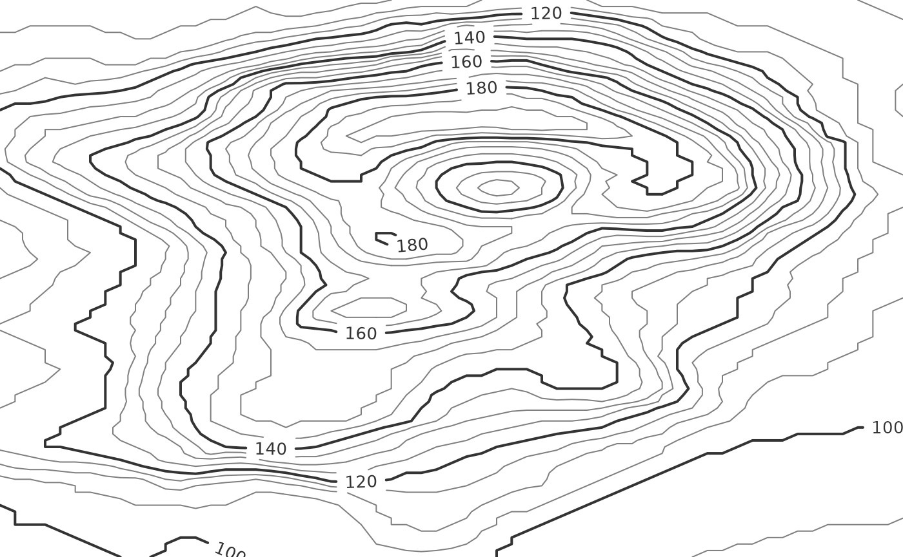
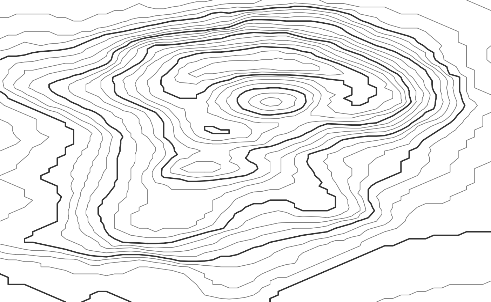
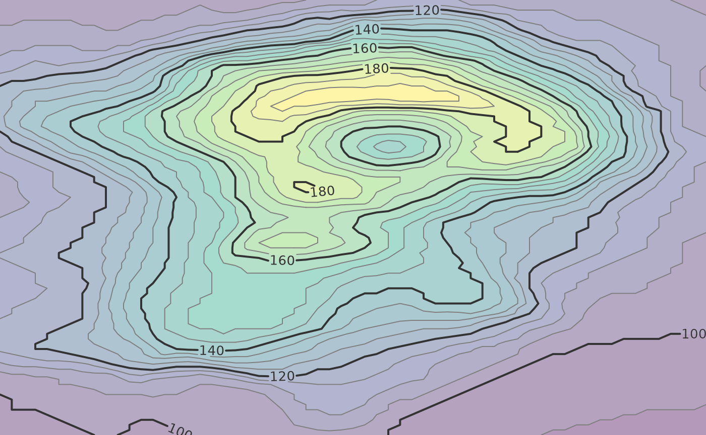

Labeled isolines can be drawn in the grid graphics system via the
isolines_grob() function.
library(isoband)
library(grid)
x <- (0:(ncol(volcano) - 1))/(ncol(volcano) - 1)
y <- ((nrow(volcano) - 1):0)/(nrow(volcano) - 1)
lines <- isolines(x, y, volcano, 5*(19:38))
g <- isolines_grob(
lines, breaks = 20*(5:10),
gp = gpar(
fontsize = 10,
lwd = c(1, 2, 1, 1),
col = c("grey50", "grey20", "grey50", "grey50")
)
)
grid.newpage()
grid.draw(g)
The function places labels at the isolines specified via the
breaks argument, and it crops isolines around the labels so
no lines run into the labels. It is possible to leave extra space around
the labels using the margin argument.
g <- isolines_grob(
lines, breaks = 20*(5:10),
margin = unit(c(3, 5, 3, 5), "pt"), # margin specified as top, right, bottom, left
gp = gpar(
fontsize = 10,
lwd = c(1, 2, 1, 1),
col = c("grey50", "grey20", "grey50", "grey50")
)
)
grid.newpage()
grid.draw(g)
Where the labels are drawn can be controlled via the
label_placer argument. A few different label placement
strategies are provided. The default,
label_placer_minmax(), places labels at the maximum and
minimum y value for each isoline. However, this label placer can be
further customized. For example, labels can be placed at maximum and
minimum x values and at a fixed rotation angle of 90 degrees.
g <- isolines_grob(
lines, breaks = 20*(5:10),
gp = gpar(
fontsize = 10,
lwd = c(1, 2, 1, 1),
col = c("grey50", "grey20", "grey50", "grey50")
),
label_placer = label_placer_minmax(
placement = "rl", # place labels right and left, i.e., min and max x
rot_adjuster = angle_fixed(pi/2) # set fixed angle of 90 degrees
)
)
grid.newpage()
grid.draw(g)The label placer label_placer_none() doesn’t place any
labels.
g <- isolines_grob(
lines, breaks = 20*(5:10),
gp = gpar(
lwd = c(1, 2, 1, 1),
col = c("grey50", "grey20", "grey50", "grey50")
),
label_placer = label_placer_none()
)
grid.newpage()
grid.draw(g)
We can also place labels entirely manually by using
label_placer_manual(). This label placer takes as arguments
the breaks that should be labeled and the corresponding coordinates and
label angles. Breaks for which no coordinates are specified are ignored.
If multiple coordinates are supplied for the same break then multiple
labels are placed for that break.
g <- isolines_grob(
lines, breaks = 20*(5:10),
gp = gpar(
fontsize = 12,
lwd = c(1, 2, 1, 1),
col = c("grey50", "grey20", "grey50", "grey50")
),
label_col = "red",
label_placer = label_placer_manual(
breaks = c("120", "160", "160"),
x = c(0.15, 0.5, 0.6),
y = c(0.19, 0.51, 0.87),
theta = 0
)
)
grid.newpage()
grid.draw(g)
Because isolines are cropped around the labels, the labeling strategy
works even if the isolines are drawn on top of a colored background. For
example, we could draw filled isobands using
isobands_grob() and then draw labeled lines on top.
viridis_pal <- colorRampPalette(
c("#440154", "#414487", "#2A788E", "#22A884", "#7AD151", "#FDE725"),
space = "Lab"
)
bands <- isobands(x, y, volcano, 5*(18:38), 5*(19:39))
b <- isobands_grob(
bands,
gp = gpar(col = NA, fill = viridis_pal(21), alpha = 0.4)
)
l <- isolines_grob(
lines, breaks = 20*(5:10),
gp = gpar(
fontsize = 10,
lwd = c(1, 2, 1, 1),
col = c("grey50", "grey20", "grey50", "grey50")
)
)
grid.newpage()
grid.draw(b)
grid.draw(l)